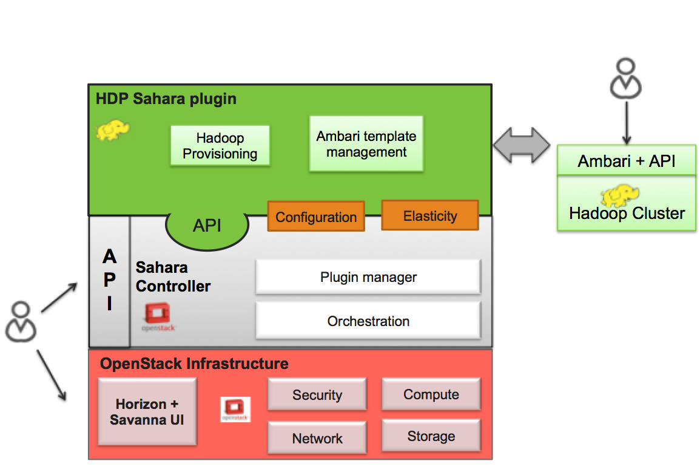

The Hortonworks Data Platform (HDP) Sahara plugin provides a way to provision HDP clusters on OpenStack using templates in a single click and in an easily repeatable fashion. As seen from the architecture diagram below, the Sahara controller serves as the glue between Hadoop and OpenStack. The HDP plugin mediates between the Sahara controller and Apache Ambari in order to deploy and configure Hadoop on OpenStack. Core to the HDP Plugin is Apache Ambari which is used as the orchestrator for deploying HDP on OpenStack.
The HDP plugin can make use of Ambari Blueprints for cluster provisioning.
Apache Ambari Blueprints is a portable document definition, which provides a complete definition for an Apache Hadoop cluster, including cluster topology, components, services and their configurations. Ambari Blueprints can be consumed by the HDP plugin to instantiate a Hadoop cluster on OpenStack. The benefits of this approach is that it allows for Hadoop clusters to be configured and deployed using an Ambari native format that can be used with as well as outside of OpenStack allowing for clusters to be re-instantiated in a variety of environments.
For more information about Apache Ambari Blueprints, refer to: https://issues.apache.org/jira/browse/AMBARI-1783. Note that Apache Ambari Blueprints are not yet finalized.
The HDP Plugin performs the following four primary functions during cluster creation:
The Sahara HDP plugin can make use of either minimal (operating system only) images or pre-populated HDP images. The base requirement for both is that the image is cloud-init enabled and contains a supported operating system (see http://docs.hortonworks.com/HDPDocuments/HDP1/HDP-1.2.4/bk_hdp1-system-admin-guide/content/sysadminguides_ha_chap2_3.html).
The advantage of a pre-populated image is that provisioning time is reduced, as packages do not need to be downloaded and installed which make up the majority of the time spent in the provisioning cycle. In addition, provisioning large clusters will put a burden on the network as packages for all nodes need to be downloaded from the package repository.
For more information about HDP images, refer to https://github.com/openstack/sahara-image-elements.
There are three VM images provided for use with the HDP Plugin, that can also be built using the tools available in sahara-image-elemnts:
HDP plugin requires an image to be tagged in Sahara Image Registry with two tags: ‘hdp’ and ‘<hdp version>’ (e.g. ‘1.3.2’).
Also in the Image Registry you will need to specify username for an image. The username specified should be ‘cloud-user’.
The HDP plugin currently has the following limitations:
The HDP plugin currently supports HDP 1.3.2 and HDP 2.0.6. Support for future version of HDP will be provided shortly after software is generally available.
Prior to Hadoop cluster creation, the HDP plugin will perform the following validation checks to ensure a successful Hadoop deployment:
For more information, please contact Hortonworks.
{kind=link}